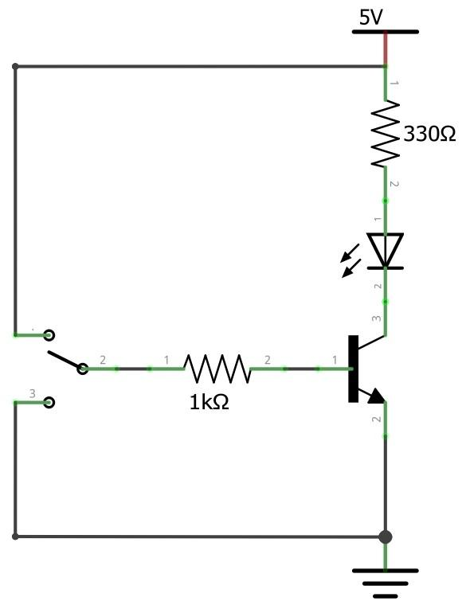
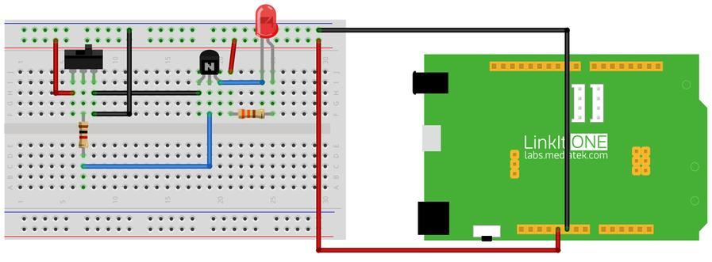

What We're Doing
Let's build a simple circuit using a transistor, LED and a toggle switch. Light Emitting Diode (LED) transforms electrical energy into visible light. Transistor is a fundamental component in electronics which acts as a switch or a current amplifier. Here, we use a switch to ON and OFF the LED indirectly using the transistor.
Things you need
Schematic

Connection

Troubleshooting
Making it better
Now we've made a simple control circuit. Lets make it fascinating by just adding another component called a capacitor. A capacitor acts like a temporary charge storing device. If a capacitor is connected in parallel with the resistor which is in series with the LED it fades the LED. When the switch is turned ON the capacitor gets charged, when the switch is turned OFF the charge stored in the capacitor gets discharged slowly which makes fading OFF of the LED.
More ideas
What is the component used for growing the luminosity of the LED slowly when it is turned ON?
Reference